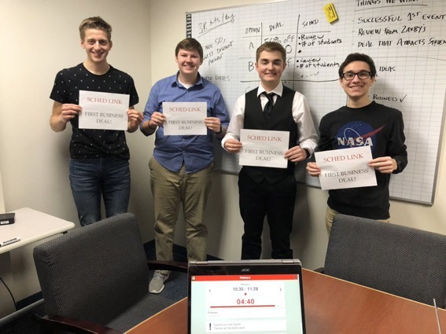
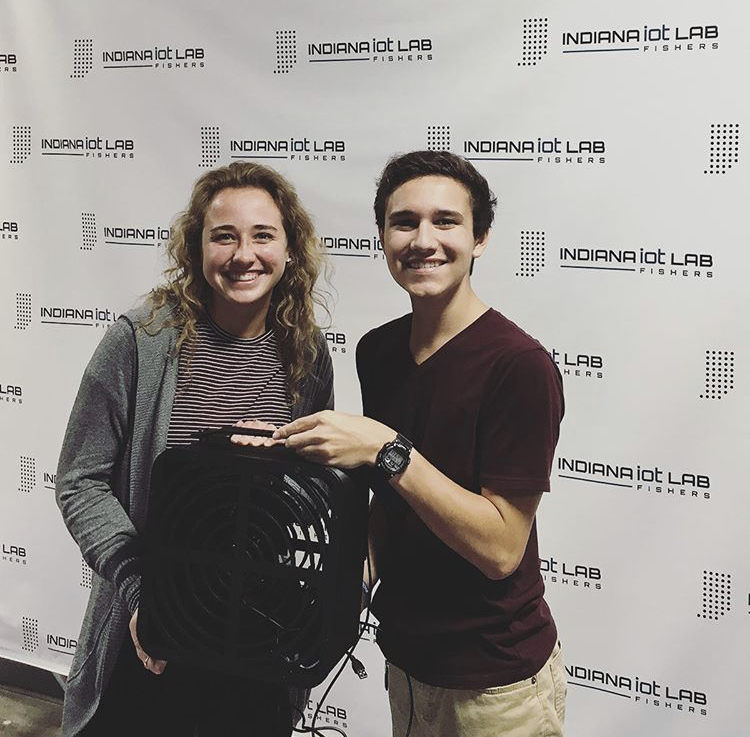

<< Back
Projects
I was the CEO of SchedLink. I started it in my sophomore year of highschool as
a side project, but it really took off in my junior year. I recruited a team to
help develop it, both in the software development and the businesses development.
SchedLink was a school management software that helps make school life easier for
students and teachers. During the development, I grew my skills in programming languages
such as: HTML/CSS, JS, and PHP. I also learned how to be a better leader and utilized
project management skills. The web pages I worked on at SchedLink were: notifications page,
settings, sign in, create account, create/sign up for classes, club management page, and more.
SchedLink is no longer active, but you can learn more to the right.
As a rising junior, I was selected from the Launch Fishers Fellowship Program
to be an intern at the Indiana IoT Lab. I was tasked to create a piece of
technology that could solve any real world problem, so I created and
designed a Smart Fan. During the process, I used various 3D printing/CAD
hardware/software, laser cutting, and an Arduino ESP32 to create
physical a prototype. By the end of the internship, the Smart Fan
had the following features: accessible through bluetooth, variable
speeds, portable design, white noise, and programmable temperature
control system.
One recreational project I've been working on is centered around
3D printing and CAD. I've designed, 3D printed, and hung up dozens
of Star Wars ships on my ceiling. Most of this is just for fun,
but I've also learned and become much more comfortable with Autodesk
Fusion.
Using the same Raspberry Pi that is running this website, I created
a holocron. The holocron is web-controlled to change colors, and can
be remotely viewed from an integrated webcam at this link. I used PHP for the backend
and used the GPIO pins on the Raspberry Pi to control the LEDs and a motor.
The frame of Holocron was also CADed and 3D printed by me.

